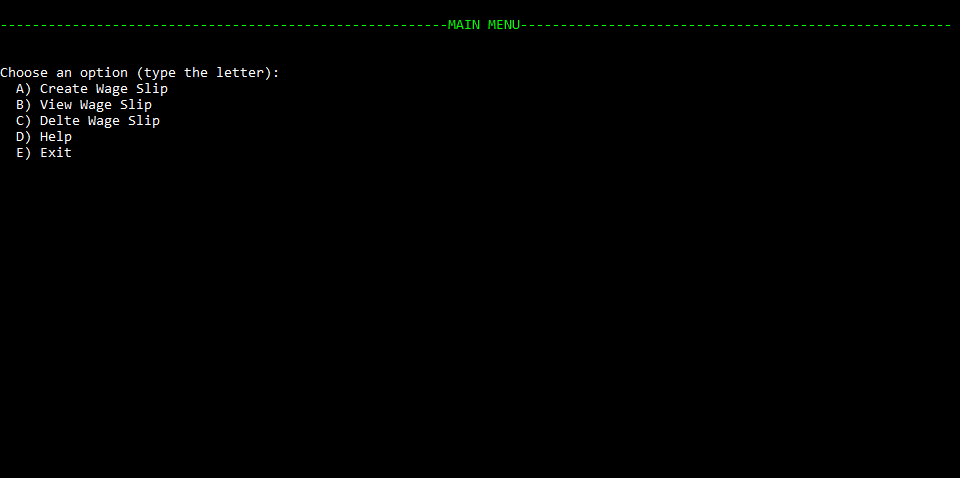

A GUIDE ON USING THE WAGE CALCUALTOR
MAIN MENU
After the login (a process already done, as this screen is showing up), there is the main menu; which contains all the options available. Type the letter identifying the option and press enter.
CREATE SLIP
After selecting the create option, it will start asking for the details, in order to create the payslip. Fill the fields with the correct details, ensuring to use the correct characters (e.g. no numbers in the name and surname field). After typing a field, press the ENTER key to continue with the next field, and keep doing it until it asks for the role; when it asks for the role, if it is on the list, type the letter identifying that role and press ENTER; or if the role is not in the list, type “d”, and then press ENTER, it will ask the role, fill in with the appropriate role, and press ENTER; it will ask for the hourly rate, type the correct rate and press ENTER (e.g. 12.03). Now, it will calculate the wage, and it will ask to press ENTER, to view the slip, press ENTER, and it will print out the payslip. After checking the details of the payslip, to ensure they are correct, press ENTER, the program will ask to save the payslip, if the result of the calculation is positive, and you are happy with it you can type “y” to save the payslip, or “n” to discard the payslip (after typing the letter it’s needed to press ENTER, every time a field is filled, it requires to press ENTER). After saving (or not saving) the payslip, press ENTER to go back in the main menu.

And this is how the result looks like

VIEW SLIP
To view a previously saved payslip, in the main menu type the associated letter “b”, and press ENTER; the program will ask the National Insurance number of the employee (it doesn’t require to type the entire number, it works also with half of it). After typing it, press ENTER, and it will print out all the payslips of that employee, near the date, it will also have a unique ID, this is useful when deleting a payslip. After finishing to view the payslips, press ENTER, to be redirected to the main menu.

And this is how the result looks like
DELETE SLIP
To delete a payslip, in the main menu, type “c”, and press ENTER. It will ask the ID of the payslip to delete (to check the ID, use the VIEW PAYSLIP option, and take note of the ID). After typing the ID number, press ENTER, and it will confirm the deletion of the payslip. Press ENTER again to navigate back to the main menu.

EXIT
To exit the program, in the main menu, type “E” and press ENTER, this will close the program.